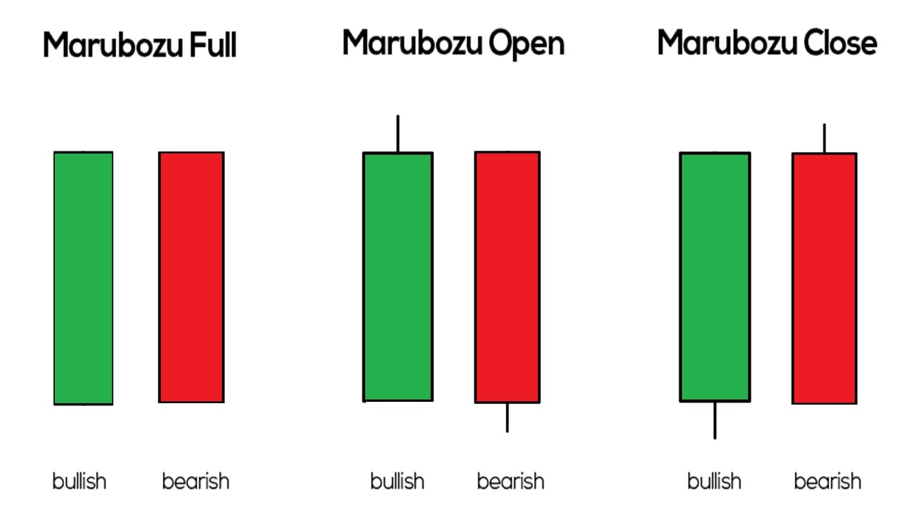

we briefly understood technical analysis and the main difference between technical and fundamental analysis. In this chapter, we will dig a bit deeper and explore the assumptions technical analysis is based upon.
Application on asset types
One of the greatest advantages of technical analysis is that you can apply TA on any asset class as long as the asset type has historical time series data. Time series data in technical analysis is the price information, namely – open high, low, close, volume, etc.
Here is an analogy that may help. Think about learning how to drive a car. Once you learn how to drive a car, you can drive any car, whether a Mahindra XUV or a Maruti Swift. Likewise, you only need to learn technical analysis once. Once you do so, you can apply TA on any asset class – equities, commodities, foreign exchange, fixed income, etc.
The fact that TA can be applied to multiple assets is probably one of the biggest advantages of TA compared to the other stock market research techniques. For example, one has to study the profit and loss, balance sheet, and cash flow statements when it comes to the fundamental analysis of equity. However, the fundamental analysis of commodities is completely different.
When dealing with an agricultural commodity like Coffee or Pepper, the fundamental analysis includes analyzing rainfall, harvest, demand, supply, inventory etc. However, the fundamentals of metal commodities are different, so it is for energy commodities. So every time you choose a commodity, the fundamentals change.
On the other hand, the concept of technical analysis will remain the same irrespective of the asset you are studying. For example, an indicator such as ‘Moving average convergence divergence (MACD) or ‘Relative strength index (RSI) is used the same way on equity, commodity, or currency.
Assumption in Technical Analysis
Unlike fundamental analysts, technical analysts don’t worry about the company’s valuation. The only thing that matters is the stock’s historical trading data (price and volume) and the insights the past data provides about the future movement in stock price.
Technical Analysis is based on a few key assumptions. You need to know these assumptions to ensure you use technical analysis effectively.
Markets discount everything
This assumption tells us that all known and unknown information in the public domain is reflected in the latest stock price. For example, an insider could buy the company’s stock in large quantities in anticipation of a good quarterly earnings announcement. While the insider does this secretively, the price reacts, revealing to the technical analyst that something is about to happen in the stock price.
The ‘how’ is more important than the ‘why’
This is an extension of the first assumption. Going with the same example discussed above – the technical analyst would not be interested in questioning why the insider bought the stock as long as the technical analyst knows how the price reacted to the insider’s action.
Price moves in trend
All major moves in the market are an outcome of a trend. The concept of trend is the foundation of technical analysis. For example, the recent upward movement in the NIFTY 50 Index to 18500 from 14750 did not happen overnight. This move happened in a phased manner in over 11 months. Another way to look at it is that once the trend is established, the price moves in the direction of the trend.
History tends to repeat itself
In the technical analysis context, the price trend tends to repeat itself. This happens because the market participants consistently react to price movements in remarkably similar ways every time the price moves in a certain direction. For example, in an uptrend, market participants get greedy and want to buy irrespective of the high price. Likewise, market participants want to sell in a downtrend irrespective of the low and unattractive prices. This human reaction has been the same towards stock prices over time, ensuring that history repeats itself.
The Trade Summary
The Indian stock market is open from 9:15 AM to 03:30 PM. During the 6 hours 15-minute market session, millions of trades occur. Think about an individual stock – every minute, a trade gets executed on the exchange. As market participants do we need to keep track of all the different price points at which a trade is executed?
To illustrate this further, let us consider this imaginary stock in which many trades exist. Look at the picture below. Each point refers to a trade being executed at a particular time. If one manages to plot a graph that includes every second from 9:15 AM to 3:30 PM, the graph will be cluttered with many points. I’ve tried to represent this in the chart below -
The market opened at 9:15 AM and closed at 3:30 PM, during which there were many trades. It will be practically impossible to track all these different price points. One needs a summary of the trading action and not the details on all the different price points.
We can summarise the price action by tracking the Open, high, low, and close.
Open Price – When the markets open for trading, the first price
a trade executes
is called the opening price.
The High Price – This represents the highest price at which a
trade occurred for
the given day.
The Low Price – This represents the lowest price at which a
trade occurred for
the given day.
The Close Price – This is the most important price because it
is the final price at which the market closes for the day. The close indicates
the intraday strength and a reference price for the next day. If the close is
higher than the open, it is considered a positive day; otherwise negative. Of
course, we will deal with this in greater detail as we progress through the
module.
The closing price also shows the market sentiment and serves as a reference
point for the next day’s trading. For these reasons, closing is more important
than the opening, high or low prices.
The main data points from the technical analysis perspective are open, high,
low, and close prices. Each of these prices has to be plotted on the chart and
analyzed.
Chart Patterns
Having recognized that the Open (O), high (H), low (L), and close (C) serves as the best way to summarize the trading action for the given time period, we need a charting technique that displays this information in the most comprehensible way. If not for a good charting technique, charts can get quite complex. Each trading day has four data points’ i.e the OHLC. If we are looking at a 10 day chart, we need to visualize 40 data points (1 day x 4 data points per day). So you can imagine how complex it would be to visualize 6 months or a year’s data.
As you may have guessed, the regular charts that we are generally used to – like the column chart, pie chart, area chart etc does not work for technical analysis. The only exception to this is the line chart.
The regular charts don’t work mainly because they display one data point at a given point in time. However Technical Analysis requires four data points to be displayed at the same time.
Below are some of the chart types:
- Line chart
- Bar Chart
- Japanese Candlestick
The focus of this module will be on the Japanese Candlesticks however before we get to candlesticks, we will understand why we don’t use the line and bar chart.
The Line and Bar chart
The line chart is the most basic chart type and it uses only one data point to form the chart. When it comes to technical analysis, a line chart is formed by plotting the closing prices of a stock or an index. A dot is placed for each closing price and the various dots are then connected by a line.
If we are looking 60 day data then the line chart is formed by connecting the dots of the closing prices for 60 days.
:max_bytes(150000):strip_icc():format(webp)/dotdash_final_Range_Bar_Charts_A_Different_View_of_the_Markets_Dec_2020-01-98530a5c8f854a3ebc4440eed52054de.jpg)
The line charts can be plotted for various time frames namely monthly, weekly, hourly etc. So ,if you wish to draw a weekly line chart, you can use weekly closing prices of securities and likewise for the other time frames as well.
The advantage of the line chart is its simplicity. With one glance, the trader can identify the generic trend of the security. However the disadvantage of the line chart is also its simplicity. Besides giving the analysts a view on the trend, the line chart does not provide any additional detail. Plus the line chart takes into consideration only the closing prices ignoring the open, high and low. For this reason traders prefer not to use the line charts.
History of the Japanese Candlestick

Before we jump in, it is worth spending time to understand in brief the history of the Japanese Candlesticks. As the name suggests, the candlesticks originated from Japan. The earliest use of candlesticks dates back to the 18th century by a Japanese rice merchant named Homma Munehisa.
Though the candlesticks have been in existence for a long time in Japan, and are probably the oldest form of price analysis, the western world traders were clueless about it. It is believed that sometime around 1980’s a trader named Steve Nison accidentally discovered candlesticks, and he actually introduced the methodology to the rest of the world. He authored the first ever book on candlesticks titled “Japanese Candlestick Charting Techniques” which is still a favorite amongst many traders.
Most of the pattern in candlesticks still retains the Japanese names; thus giving an oriental feel to technical analysis.
Candlestick patterns and what to expect
The candlesticks are used to identify trading patterns. Patterns in turn help the technical analyst to set up a trade. The patterns are formed by grouping two or more candles in a certain sequence. However, sometimes powerful trading signals can be identified by just single candlestick pattern.
Hence, candlesticks can be broken down into single candlestick pattern and multiple candlestick patterns.
Under the single candlestick pattern, we will be learning the following:
- Bullish Marubozu
- Bearish Marubozu
- Classic Doji
- Long-Legged Doji
- Dragonfly Doji
- Gravestone Doji
- Four Price Doji
- Tombstone Doji
- Neutral Doji
- Hammer
- Hanging Man
1. Marubozu
2. Doji
3. Spinning Tops
4. Paper Umbrella
5. Shooting Star
6. Inverted Hammer
Multiple candlestick patterns are a combination of multiple candles. Under the multiple candlestick patterns, we will learn the following:
- Bullish Engulfing
- Bearish Engulfing
- Bullish Harami
- Bearish Harami
1. Engulfing pattern
2. Harami
3. Piercing Pattern
4. Dark Cloud Cover
5. Morning Star
6. Evening Star
7. Three White Soldiers
8. Three Black Crows
Candlestick patterns help the trader develop a complete point of view. Each pattern comes with an in-built risk mechanism. Candlesticks give insight into both entry and stop loss prices.
Few assumptions specific to candlesticks
Before we jump in and start learning about the patterns, there are few more assumptions that we need to keep in mind. These assumptions are specific to candlesticks. Do pay a lot of attention to these assumptions as we will keep referring back to these assumptions quite often later.
At this stage, these assumptions may not be very clear to you. I will explain them in greater detail as and when we proceed. However, do keep these assumptions in the back of your mind.
Buy strength and sell weakness – Strength is represented by a bullish (blue) candle and weakness by a bearish (red) candle. Hence whenever you are buying ensure it is a blue candle day and whenever you are selling, ensure it’s a red candle day.
Be flexible with patterns (quantify and verify) – While the text book definition of a pattern could state a certain criteria, there could be minor variations to the pattern owing to market conditions. So one needs to be a bit flexible. However one needs to be flexible within limits, and hence it is required to always quantify the flexibility
Look for a prior trend – If you are looking at a bullish pattern, the prior trend should be bearish and likewise if you are looking for a bearish pattern, the prior trend should be bullish
Let's Dive into patterns
Candles
Bullish Candle: A bullish candlestick represents a period in which the price of an asset has increased over that time frame. In a bullish candle, the opening price is typically lower than the closing price, creating a body that is filled or colored. The upper part of the body represents the closing price, and the lower part represents the opening price. This candle is often associated with positive sentiment and an upward movement in the market.
Bearish Candle: A bearish candlestick represents a period in which the price of an asset has decreased over that time frame. In a bearish candle, the opening price is typically higher than the closing price, creating a body that is hollow or colored. The upper part of the body represents the opening price, and the lower part represents the closing price. This candle is often associated with negative sentiment and a downward movement in the market.
These terms are commonly used in technical analysis to assess market trends and make trading decisions. Traders and analysts often look at patterns formed by these candles, along with other indicators, to understand market sentiment and potential price movements.

Marubozu
A Marubozu is a candlestick pattern in technical analysis that consists of a single candlestick with no or very short shadows (wicks) and a body that represents the full price range between the opening and closing prices. There are two types of Marubozu patterns:

Bullish Marubozu: This pattern forms when the opening price is equal to the low price, and the closing price is equal to the high price. It suggests strong buying pressure throughout the session and indicates a potential bullish trend continuation or reversal.

Bearish Marubozu: In contrast, a Bearish Marubozu occurs when the opening price is equal to the high price, and the closing price is equal to the low price. It indicates strong selling pressure and suggests a potential bearish trend continuation or reversal.

Marubozu patterns signify a lack of price retracement during the trading session, highlighting the dominance of buyers or sellers. They are considered as strong signals, especially when they appear after a trend or consolidation.
How do you identify a Marubozu pattern?
The Marubozu candlestick patterns can be identified by their apparent large bodies and ideally without any wick or shadow.

The important part of this study is, that we can easily identify the Marubozu candles just from their shapes. We don’t have to look at anything else to confirm what are they. This is the easiest part. one can easily identify a Marubozu from their structure and type their colors.

Doji
A Doji is a candlestick pattern in technical analysis that occurs when the opening and closing prices of an asset are very close to each other, resulting in a short or almost non-existent body. This pattern signifies market indecision and uncertainty, suggesting a potential reversal or significant price movement in the near future. The Doji pattern is characterized by its cross-like appearance, with equal or nearly equal lengths of the upper and lower shadows, indicating that neither buyers nor sellers were able to establish dominance during the trading session.


Classic Doji: The Classic Doji pattern occurs when the opening and closing prices of an asset are very close or equal, resulting in a very small or nonexistent body. This pattern indicates a state of indecision in the market between buyers and sellers. It suggests that the balance between supply and demand is uncertain, potentially signaling a reversal in the current trend.

Long-Legged Doji: A Long-Legged Doji has both upper and lower shadows (wicks) that are significantly longer than the body. This pattern reflects high levels of volatility and indecision among traders. It implies that despite wide price fluctuations, the open and close prices ended up being close to each other. It suggests potential trend reversals or significant market moves.

Dragonfly Doji: The Dragonfly Doji occurs when the open, high, and close prices are the same, resulting in a small or nonexistent upper shadow and a long lower shadow. This pattern often appears at the bottom of a downtrend and signifies potential bullish reversal. It indicates that sellers were initially strong but lost control, and buyers might take over.

Gravestone Doji: The Gravestone Doji is the opposite of the Dragonfly Doji. It forms when the open, low, and close prices are the same, creating a small or nonexistent lower shadow and a long upper shadow. This pattern often appears at the top of an uptrend and suggests potential bearish reversal. It indicates that buyers were initially strong but lost control to sellers.

Four Price Doji: The Four Price Doji is rare and occurs when the open, high, low, and close prices are the same, forming a small square body. This pattern indicates a strong state of indecision and can be a signal of a potential trend reversal or significant market move. Traders interpret this pattern cautiously due to its rarity.

Tombstone Doji: The Tombstone Doji is similar to the Gravestone Doji, but it appears after an uptrend. It suggests potential bearish reversal. The open, high, and close prices are the same, creating a small or nonexistent lower shadow and a long upper shadow. It indicates that buyers, who were strong during the uptrend, lost control to sellers.
Neutral Doji: The Neutral Doji occurs when the open and close prices are the same, but there's a significant range between the high and low prices. This pattern represents uncertainty and a balanced market between buyers and sellers. It indicates that neither side has a clear advantage and might lead to a continuation of the current trend or a potential reversal.

These Doji patterns provide insights into market sentiment and potential trend changes, but traders should always consider other factors and technical analysis tools for confirmation before making trading decisions.


Doji Reversal
A "Doji Reversal" refers to a candlestick pattern in technical analysis where a Doji candlestick is followed by a significant price movement in the opposite direction. A Doji candlestick is a candlestick pattern that has a small or nearly non-existent body and occurs when the opening and closing prices are very close or identical. It represents indecision in the market and suggests that buyers and sellers are in balance.


Spinning Top
A Spinning Top is a candlestick pattern in technical analysis that appears on price charts. It is characterized by having a short real body (the difference between open and close prices) and relatively long upper and lower shadows (also known as wicks or tails). This creates a candlestick that looks like a spinning top or a small umbrella.
The Spinning Top pattern suggests that there is indecision in the market, where neither buyers nor sellers have gained full control. The price has moved significantly higher and lower during the trading period, but it has ultimately closed near its opening price. This indicates that despite the volatility, the market has ended up almost where it started.
The presence of a Spinning Top can be seen as a potential reversal signal if it forms after an uptrend or downtrend, indicating that the current trend might be losing momentum. It can also act as a continuation pattern if it forms within a sideways or consolidating market, suggesting that the indecision might lead to a continuation of the existing trend.
Traders often analyze other factors such as the preceding trend, volume, and nearby support and resistance levels to determine the significance of a Spinning Top and make informed trading decisions.


Looking at the picture below, we have a GBP/USD daily chart.

The price action is moving higher to a point where it prints a new short-term high, but the bulls fail to force a high close, so instead, the price closes near the opening price.
An end to a strong impulsive move upside has actually started with a spinning top
pattern. You can either wait for a confirmation candle or open a trade as soon as
the spinning top formation is created. A stop-loss order should be placed just above
the previous high.
With take profits you can be more flexible and this depends on your risk tolerance.
A similar situation develops in the USD/CAD daily chart below.

Difference between a Doji and a Spinning Top

The main difference between a Doji and a Spinning Top lies in their appearance and
interpretation on price charts:
1. Doji:
- A Doji is a candlestick pattern with a very small or non-existent real body, where
the open and close prices are nearly equal or exactly the same.
- It can have varying lengths of upper and lower shadows (wicks or tails).
- Doji patterns suggest indecision in the market and potential trend reversals. They
indicate that neither buyers nor sellers were able to gain control during the
trading period.
- Doji patterns are often considered more significant when they appear after a
strong uptrend or downtrend.
2. Spinning Top:
- A Spinning Top is a candlestick pattern with a short real body (the difference
between open and close prices) and relatively long upper and lower shadows.
- It resembles a small umbrella or spinning top due to the extended wicks on both
sides of the candle.
- Spinning Tops also indicate indecision in the market, but they don't necessarily
imply a potential trend reversal. They suggest that price moved significantly both
higher and lower during the trading period, but closed near the opening price.
- Spinning Tops can be continuation patterns when they appear within a sideways
market or consolidation.
In summary, both Doji and Spinning Top patterns reflect market indecision, but their
appearance and potential interpretations differ. Doji patterns focus on the equality
of open and close prices, while Spinning Tops emphasize the balance between price
movement and the eventual close. Traders often use these patterns in conjunction
with other technical tools and factors to make informed trading decisions.
Paper Umbrella
"Paper Umbrella" is not a widely recognized term in technical analysis. It's possible that you might be referring to the "Hammer" and "Hanging Man" candlestick patterns, which are also known as "Umbrella" patterns. These patterns are reversal patterns that can indicate potential changes in the trend. Let's discuss them:

Hammer:
The Hammer pattern forms after a downtrend and consists of a small real body at the upper end of the price range, with a long lower shadow (wick or tail).
The candlestick resembles a hammer, with a small head and a long handle (shadow).
The real body can be bullish or bearish.
The long lower shadow indicates that prices dropped significantly during the trading session but rebounded to close near the opening price.
The Hammer pattern suggests potential bullish reversal, as it shows that buyers are stepping in after a downtrend, signaling a possible trend reversal.
The hammer pattern is a single-candle bullish reversal pattern that can be spotted at the end of a downtrend. The opening price, close, and top are approximately at the same price, while there is a long wick that extends lower, twice as big as the short body.

On the other hand, an inverted hammer is exactly what the name itself suggests i.e. a hammer turned upside down. A long shadow shoots higher, while the close, open, and low are all registered near the same level.

Following a bullish reversal, the price action rotates lower again to briefly trade in a downtrend. At one point, the inverted hammer was created as the bulls failed to create a hammer, but still managed to press the price action higher.

As a result, the next candle exploded higher as the bulls felt that the bears were not so dominant anymore. Hence, the inverted hammer should be seen as a testing field in this case. As soon as the bulls felt the bears’ weakness they reacted quickly to drive the price action and secure a major victory.
Hanging Man: is a candlestick pattern in technical analysis that often signals a potential reversal in an uptrend. It is a single candlestick pattern that can provide traders with valuable insights into market sentiment and potential changes in price direction.

On the chart below, we have a EUR/USD hourly chart where the price action moves upside. Since this is a bearish reversal pattern, the trend must always be positive and bullish for a hanging man pattern to occur.

In a short time frame, two hanging man candles are formed. The first candle hints
that a reversal may take place, which is then confirmed with a long bearish candle
afterwards. It’s a choppy price action so the price continues to trade without much
clarity.
Later, the price action forms the second hanging man pattern, followed by a bearish
candle and a doji. All these candles signal that the reversal is imminent, a
scenario that materializes shortly afterwards.
Shooting Star
The Shooting Star is a candlestick pattern in technical analysis that typically signals a potential reversal in an uptrend. It is a single candlestick pattern with distinct characteristics that provide insights into market sentiment and potential price changes.

Inverted Hammer: While the Inverted Hammer is usually considered a bullish reversal pattern, it can sometimes appear as a variation of the Shooting Star. It has a small real body at the upper end of the price range and a long upper shadow.
Bearish Shooting Star: This is the classic Shooting Star pattern and indicates a potential trend reversal. It has a small real body near the lower end of the price range and a long upper shadow.
Long-Legged Shooting Star: This variation of the Shooting Star has an even longer upper shadow, which indicates stronger selling pressure and potential for a more significant reversal.
To demonstrate this, let us move your attention to a chart below. We have a NZD/USD trading sideways for the most part. In the middle part of the chart, the price action starts to move gradually higher.

At one point, there is a new high in place, above the horizontal resistance. However, the buyers lose control over the price action, which initiates the pullback. A failure at important resistance/support levels is not a normal failure, it is usually much more important. For this reason, the price action rotates back lower following a failure to clear the resistance and returns to support.
The upper red line shows our stop-loss, which is around 20 pips above the session’s high. Any move to these levels where our stopp-loss is means that the pair is in a breakout territory and there is no reversal.
Our profit-taking order (the lower horizontal black line) is a simple trend line that
shows where the pair bottomed during the previous attempt to move lower. Hence, we
are looking for a pullback to the old support.
In this situation, we are risking 20 pips to earn nearly 90 pips. A simple
calculation shows that it is a 1:4.5 risk ratio, an extremely profitable trade.
Opportunities as profitable as this one are quite rare in the markets, but this does
demonstrate how powerful a shooting star candlestick pattern can be.